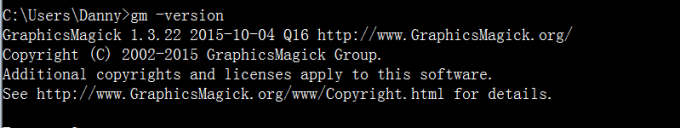

原文连接:https://www.cnblogs.com/rope/p/10744147.html
一、上传
formidable天生可以处理上传的文件，非常简单就能持久上传的文件。
今天主要讲解的是，前后端的配合套路。
上传分为同步、异步。同步公司使用非常多，异步我们也会讲解。
1.1 先看一下antd中的Form和代码校验
我们看antd中的Form组件，https://ant.design/components/form-cn/
所谓的装饰器指的是将一个组件作为一个函数的参数。
MyForm是一个标准的组件，要用Form.create()()装饰一下。
const WrappedRegistrationForm = Form.create()(MyForm);装饰器，就是函数后面有两个圈比如，getFieldDecorator()()。第一个圈里写如何装饰，第二个圈里写被装饰的组件。
慢慢去分析人家的API，慢慢看，慢慢琢磨。
1.2 上传前端套路和formidable的实现
<input type="file"/>我们现在要制作提交，前端界面必须满足几点：
1）必须要用form标签嵌套，这是一个表单，不是一个ajax程序；
2）表单的method属性必须是POST
3）必须有enttype，值是“multipart/form-data”，什么意思？下面有图片讲解
4) file控件必须有name属性
5）必须有提交按钮
<form action="/uploadAvatar" method="POST" enctype ="multipart/form-data">
<input type="file" name="avatar" />
<input type="submit" name="上传"/>
</form>
后端实现上传非常简单（当然工作实现上传肯定不是你的事情）：
//上传图片的路由
app.post("/uploadAvatar" , function(req,res){
var form = new formidable.IncomingForm();
//定义上传的文件夹名字
form.uploadDir = path.resolve(__dirname , "./www/uploads");
//保留文件拓展名
form.keepExtensions = true;
form.parse(req , function(err , fileds , files){
res.send("成功");
});
});文件名会被随机改名。
如何得到上传之后的随机名字？
form.parse(req , function(err , fileds , files){
console.log(files.avatar.path);
res.send("成功");
});提炼真正的文件名，而不包括完整路径：
var base = path.parse(files.avatar.path).base;1.3 抑制页面跳转
当点击submit按钮的时候，浏览器的默认逻辑就是跳转到action的页面。
除非你用异步。但是，异步Ajax浏览器很少支持，IE10开始支持。
<form action="/uploadAvatar" method="POST" enctype="multipart/form-data">
<input type="file" name="avatar" />
<input type="submit" name="上传"/>
</form>在同步的时候，我们就要使用奇淫技巧。
使用iframe，框架，内嵌小电视。
<iframe src="http://www.baidu.com" frameborder="1"></iframe>在小电视中的所有跳转，都是关闭到小电视中的。
我们的表单就可以被内签到小电视中，此时即使submit发生了跳转，也是在小电视中的跳转。
直接使用静态页面，在www里面创建pages文件夹：
一切都将发生在小电视中，页面跳转被抑制了。
1.4 上传按钮
并且我们希望用户选择完图片之后，就能立即上传，而不用多一次提交的点击。
用模拟事件就行了
所有的内嵌页面，将不能天生拥有外部的window的作用域。
alert($)
alert(window.parent.$)jQuery有问题，只能得到引包的window域中的dom。
模拟事件：
<script>
$("#pencile").click(function(){
$("#file_btn").trigger("click");
});
//一旦file被改变，就上传
$("#file_btn").bind("change" , function(){
$("form")[0].submit();
});
</script>1.5 回调函数
上传成功之后调用父window中的js。
form.parse(req , function(err , fileds , files){
var base = path.parse(files.avatar.path).base;
res.send("<script>window.parent.success_upload_avatar(" + base + ");</script >")
});二、图片的裁切
2.1 gm的安装
我们要安装gm这个东西，它是C++写出来的一个软件，不是npm包。
http://www.graphicsmagick.org/
GraphicsMagick is the swiss army knife of image processing.
小而功能多
下载：ftp://ftp.graphicsmagick.org/pub/GraphicsMagick/windows/
按自己的位数进行安装：
将安装路径，上图所示的这个文件夹的路径，添加到系统的环境变量中
为了检查环境变量是否设置正确，要输入
gm -version
2.2 让gm为nodejs工作
https://www.npmjs.com/package/gm
此时要安装gm这个npm包
npm install --save gmnodejs就能够剪裁图片、编辑图片、美化图片等等操作。
nodejs程序
var gm = require("gm");
//上传图片的路由
app.post("/uploadAvatar" , function(req,res){
var form = new formidable.IncomingForm();
//定义上传的文件夹名字
form.uploadDir = path.resolve(__dirname , "./www/uploads");
//保留文件拓展名
form.keepExtensions = true;
form.parse(req , function(err , fileds , files){
//图片的物理路径，指的是c:\node_study……
var pathwuli = files.avatar.path;
//图片的文件名
var base = path.parse(pathwuli).base;
//查看上传的文件的宽度、高度
gm(pathwuli).size(function(err, size){
console.log(size.width , size.height);
res.send("<script>window.parent.success_upload_avatar('" + base + "');</script >")
});
});
});formidable是用来上传图片的
gm是用来处理图片。这里使用了语法
gm().size(function(err,size){
})可以得到图片的尺寸。
后台要给你图片尺寸，因为你不能耍无赖：让图片撑出盒子，又让图片被盒子约束。
上传图片，已经是先上传图片，然后在页面上显示具有URL服务器地址的图片。
然后我们要有一个思维，就是用px来精确控制弹出层的样子，这样好看。
2.3 图片的裁切逻辑
新瓶装旧酒，jQuery的DOM逻辑还是非常丰富，React在这里只是一个壳子。


componentDidMount(){
var self = this;
//四个信号量
var cutX = 0 , cutY = 0, cutW = 100 , cutH = 100;
//cut里面的猫腻图片，为了让cut亮
var $cut_img = $(this.refs.cut_img);
$(this.refs.cut).draggable({
containment : "parent",
drag : function(event , ui){
cutY = ui.position.top;
cutX = ui.position.left;
$cut_img.css({
"left": -cutX,
"top": -cutY
});
//调用设置预览图的函数
setPreviews();
}
});
//改变尺寸
$(this.refs.cut).resizable({
aspectRatio : 1 ,
containment : "parent",
resize : function(evnet , ui){
cutW = ui.size.width;
cutH = ui.size.height;
//调用设置预览图的函数
setPreviews();
}
});
//设置预览路
function setPreviews(){
var bigimgW = $(self.refs.bigimg).width();
var bigimgH = $(self.refs.bigimg).height();
//批量设置
$(self.refs.priewBox).find(".pb").each(function(){
var w = $(this).data("w");
$(this).find("img").css({
"width": w * bigimgW / cutW,
"left": -cutX / cutW * w,
"top": -cutY / cutH * w
})
});
}
//裁切按钮的事件监听
self.cutBtnHandler = function(){
//图片原宽和当前宽度的比
var rate = self.props.realw / $(self.refs.bigimg).width();
$.post("/docut" , {
x: cutX * rate,
y: cutY * rate,
w: cutW * rate,
h: cutH * rate,
picurl: self.props.tanchucengPicUrl
});
}
}
后端接口
app.post("/docut" , function(req,res){
var form = new formidable.IncomingForm();
form.parse(req, function (err, fileds, files) {
//得到前端发来的各种数据
const {x, y,w,h,picurl} = fileds;
//完整路径
var fullurl = path.resolve(__dirname , "./www/" + picurl);
//裁切图片
gm(fullurl)
.crop(w,h,x,y) //注意这里的坑：参数的顺序是宽、高、x、y。
.resize(180,180)
.write(fullurl , function(err){ //覆盖原图即可
console.log(err)
console.log("done");
})
});
})